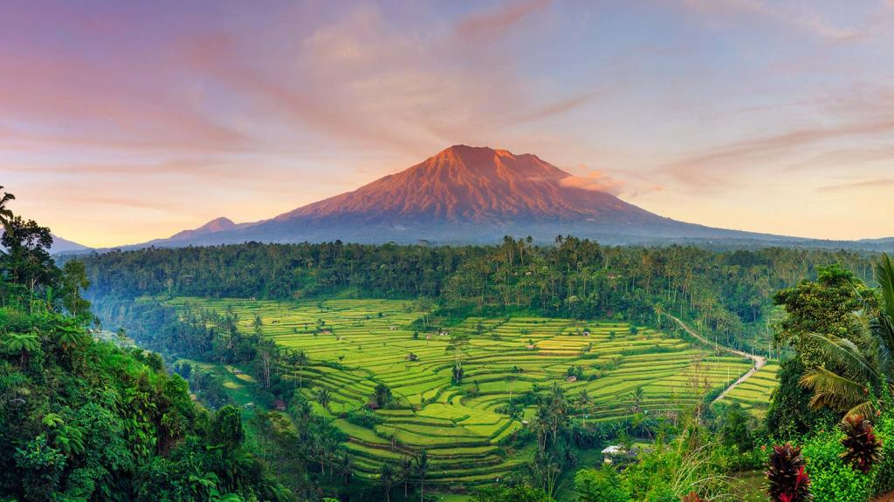
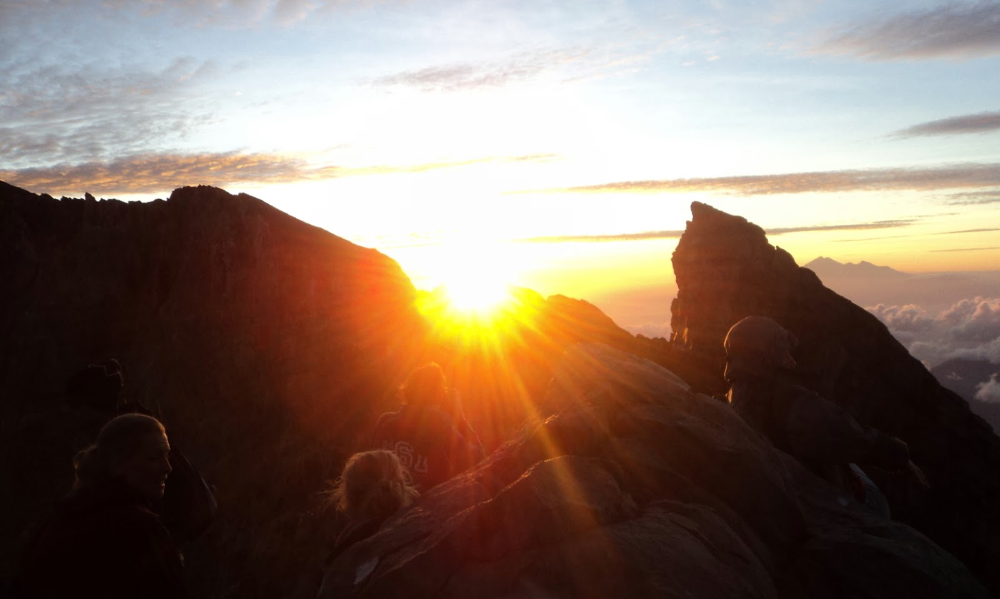
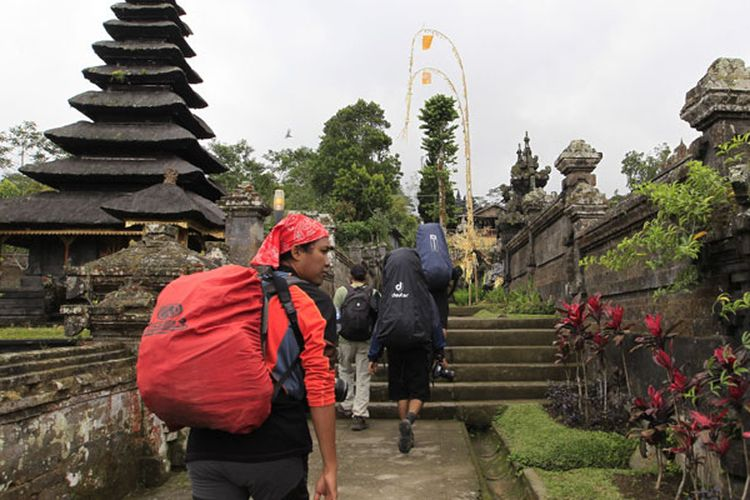

Gunung Agung
Gunung berapi tertinggi di Bali yang sangat dihormati oleh penduduk lokal. Gunung ini menjadi tempat spiritual penting dan sering dikunjungi oleh peziarah.

Matahari Terbit di Puncak
Pendakian ke puncak Gunung Agung adalah pengalaman yang menantang namun sangat memuaskan, menawarkan pemandangan matahari terbit yang spektakuler dari puncak.

Pendakian Gunung Agung
Pendakian Gunung Agung menawarkan pemandangan indah sepanjang perjalanan, dengan berbagai lanskap yang menakjubkan dan medan yang menantang.